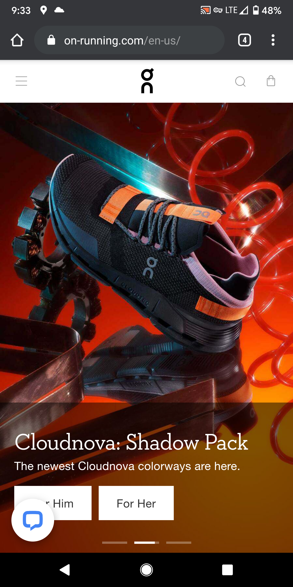

Rule of Thirds
Microsoft

I noticed that this image where microsoft lays out their computers is using the rule of thirds. The photo is symetrical and is naturally highlighting the computer in the middle.
White Space
Adobe

Adobe does a good job using whitespace throughout their sites. Here they use whitespace inside an image. But you may think that whitespace having the word 'White' in it means the background has to be that color. Not necesarilly.
Visual Hierarchy
On Cloud Running
This site uses pictures first to showcase the product. Then below has action links and descriptions below. This is a form of guiding the users eyes to specific areas of the screen. The important links they want the user to click are highligted to stand out as well.